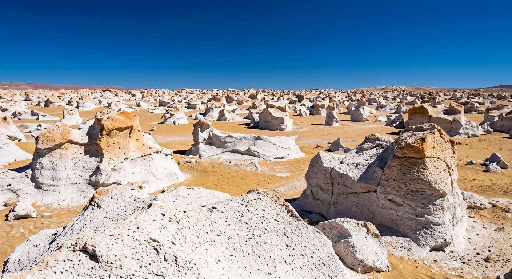

catamarca



Una gigantesca masa de hielo de 60 metros de altura en el Parque Nacional Los Glaciares, famosa por sus rupturas periódicas

Un macizo montañoso en Purmamarca cuyas laderas exhiben distintas capas minerales de colores vibrantes

Un sistema de 275 saltos de agua en medio de la selva paranaense, coronado por la imponente Garganta del Diablo.

El segundo humedal más grande de Argentina, caracterizado por sus bosques inundados ("champales") y su enorme biodiversidad de aves y fauna autóctona.

Un desierto blanco de más de 200 km² ubicado a más de 3.400 metros sobre el nivel del mar, con piletones de agua turquesa.

Un cañón desértico con paredones de roca rojiza de hasta 150 metros de altura y yacimientos paleontológicos del período Triásico

Una reserva natural en la costa patagónica, clave para el avistaje de ballenas francas australes, pingüinos, orcas y lobos marinos.